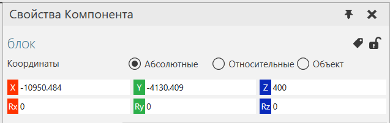
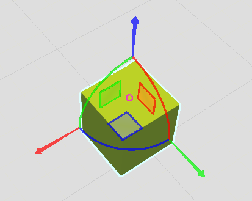

Перемещение и вращение компонентов |
|
Положение компонента в трехмерном мире определяется значениями координат (XYZ) и углами поворота (RxRyRz) в системе координат. В трехмерном мире доступны три системы координат: ·Абсолютные— глобальная система координат с фиксированным началом. ·Относительные - ссылаются на систему координат объекта родителя выбранного компонента. Если компонент не присоединен к узлу в другом компоненте, родителем выбранного компонента является трехмерный мир (корневой узел моделирования). В этом случае мировая и родительская системы координат будут иметь одно и то же начало. ·Объект - ссылается на систему координат выбранного компонента. То есть расположение компонента относительно собственной исходной точки. Если в 3D-мире выбраны два или более компонента, последний компонент, добавленный к выбору, указывается как местоположение выбора в активной системе координат. 1.В трехмерном мире выберите компоненты, которые вы хотите переместить. 2.В панели Свойства Компонента , выполните одно из следующих действий: ·Чтобы отредактировать положение выделения, в XYZ поля, введите или вставьте значения расстояния. ·Чтобы изменить ориентацию выделения, в RxRyRz поля, введите или вставьте значения градусов.  Подсказка: На панели Свойства Компонента можно щелкнуть метки X Y Z Rx Ry Rz, чтобы сбросить их значения до нуля.
Манипулятор можно использовать для определения положения и ориентации выбранных компонентов в трехмерном мире. 1.На Главной вкладке в группе Действия нажмите Переместить. 2.В трехмерном мире выберите компоненты, которые хотите переместить. 3.На манипуляторе выполните одно или все из следующих действий: ·Чтобы переместить выделение вдоль оси, перетащите стрелку оси в положительном или отрицательном направлении. ·Чтобы повернуть выделение вокруг оси, перетащите осевое кольцо по часовой стрелке или против часовой стрелки. ·Чтобы переместить выделение в плоскости, определяемой двумя осями, перетащите плоскость. ·Чтобы привязать выделение к поверхности другого компонента, перетащите тор / исходную точку манипулятора  Подсказка: Используйте команды привязки к сетке для перемещения выбранных компонентов вдоль оси или плоскости с автоматическими или заданными интервалами. Вы можете расположить указатель вдоль оси или кольца, чтобы увеличить перемещение или вращение выбранного компонента. . |